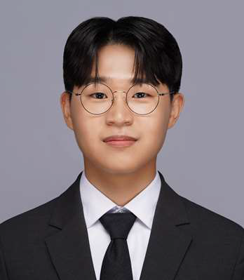

2027 –
Ph.D. in Biological Sciences, KAIST (Incoming)
Advisor: Prof. Gyu Rie Lee
AIPD Lab. Daejeon, Republic of Korea.

M.S. Student @ KAIST
AI-driven protein dynamics & computational biology.
I am a M.S. student in the School of Computing at KAIST, working at the Geometric Computing Lab (GCLab) advised by Prof. Sunghee Choi. I will be joining the AIPD (AI-driven Protein Design) Lab advised by Prof. Gyu Rie Lee for my Ph.D. in the Department of Biological Sciences at KAIST.
My research focuses on understanding and simulating protein conformational dynamics using machine learning, with a particular interest in molecular dynamics enhanced by generative models. I am passionate about bridging computational methods and biological discovery to accelerate our understanding of protein behavior at the molecular level.
Advisor: Prof. Gyu Rie Lee
AIPD Lab. Daejeon, Republic of Korea.
Outstanding Graduate of the Year (Minister of Science and ICT).
Daejeon, Republic of Korea.
School for the Gifted, Engineering Track. Sejong, Republic of Korea.
My research sits at the intersection of machine learning and structural biology. Key areas include:
Languages: Korean (native), English
PyTorch, PyTorch Geometric, Weights & Biases
OpenMM, MDAnalysis, BioEmu, RDKit, PyMOL
Python, C/C++, Bash, LaTeX
Linux, SLURM, Docker, Git, GPU Cluster Management
Australian Drone License (RPA), Korean Drone License (Class 4)
Certified Financial Investment Analyst, Financial Risk Manager, Investment Asset Manager
Western Cuisine Certificate, Korean Cuisine Certificate
KAIST Writing Contest 2nd Place (Published book, donated royalties)